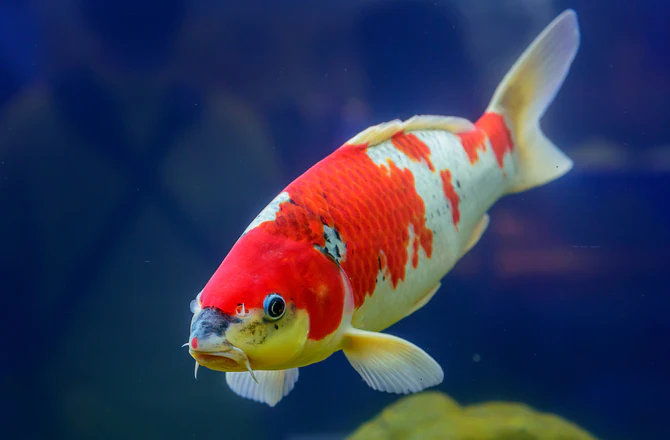
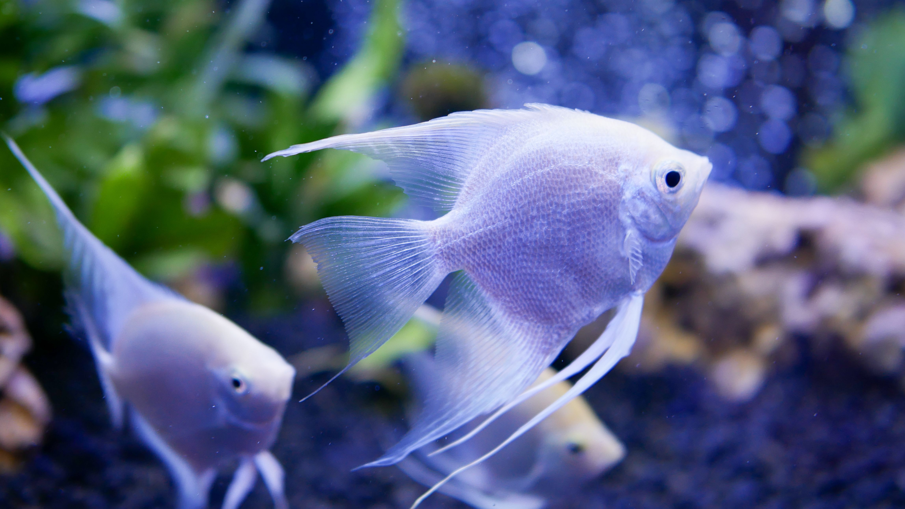

FiSH FRIENDS
KOI
Name: Akio
Species: Cyprinus rubrofuscus
Origin: Kyoto
Diet: algae, plants, insects, worms, seeds
Length: 24"
ANGELFISH
Name: Valentina
Species: Cichlidae
Origin: Amazon Basin
Diet: worms and small crustaceans
Length: 6"
TRAVEL TIPS
“There’s not much to packing a rod, but there’s a little more to landing in Alaska with your favorite fly fishing gear intact and ready to go. As long as you stay organized, get along with security and don’t lose any luggage, how hard can it be?"
Bristol Bay, AK
FiSHING DESTINATIONS
- Kyoto, Japan
- Boa Vista, Brazil